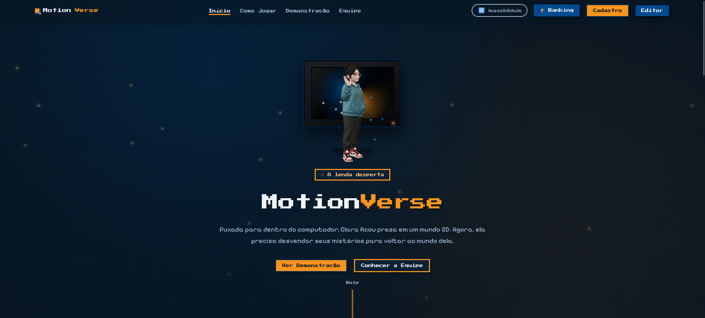
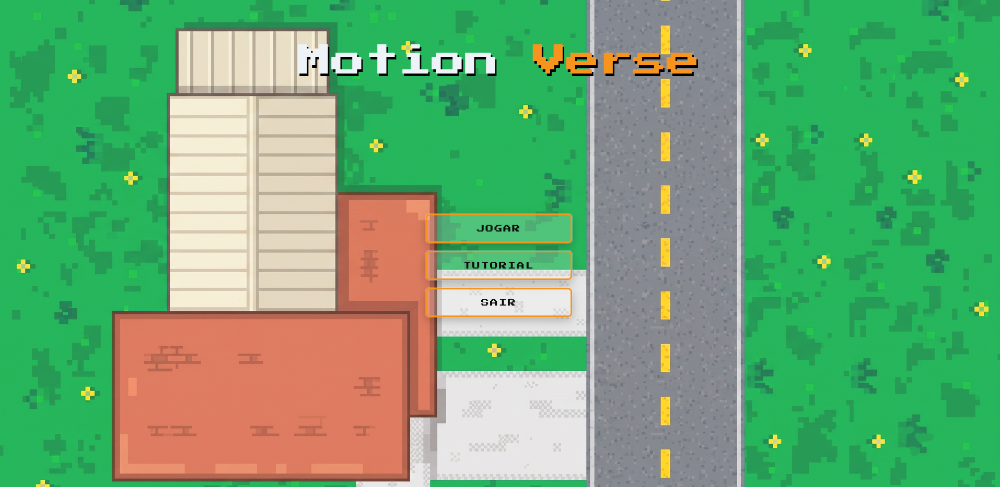
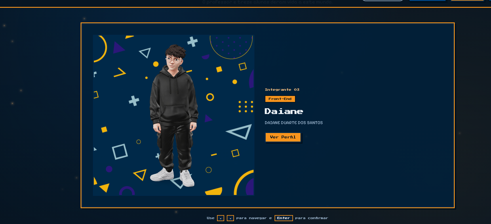
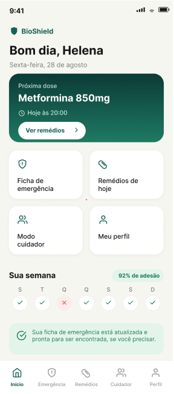
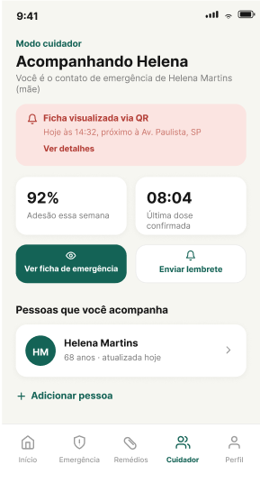
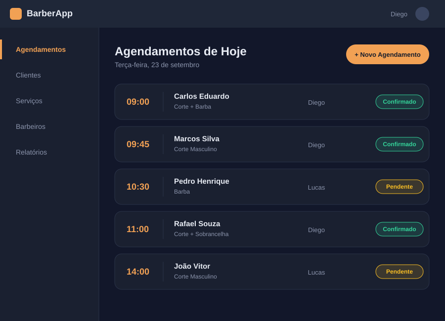
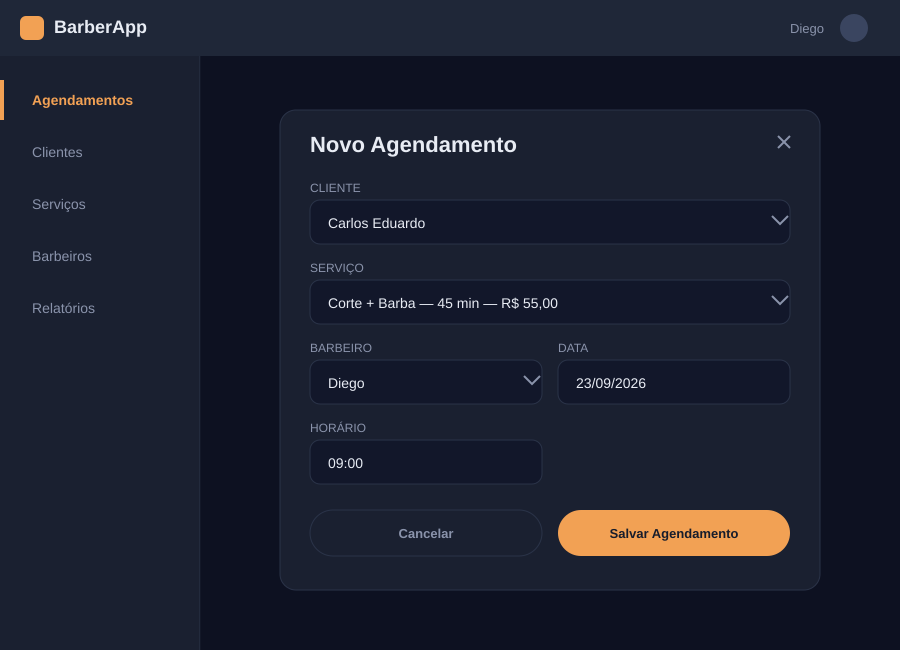
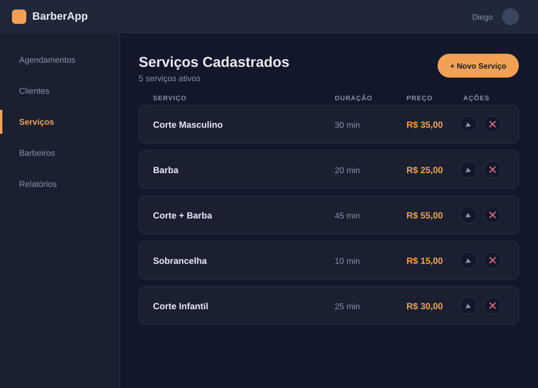

Daiane Duarte
Estudante de Tecnologia da Informação
Transformo ideias em produtos reais de jogos interativos a soluções de saúde que já estão sendo validadas com usuários de verdade.
Sou estudante de Tecnologia da Informação no Senac SP e gosto muito de transformar o que aprendo em aula em projetos de verdade. No dia a dia mexo com MySQL, Python e desenvolvimento web (HTML, CSS e JavaScript), e já participei de projetos bem diferentes entre si, de um app de agendamento até o MotionVerse, um jogo web em pixel art. Hoje estou no Empreenda Senac com o BioShield, onde ajudo na pesquisa de campo, no modelo de negócio e no front end. Ainda tenho muito pra aprender, e é justamente isso que me motiva: cada projeto novo é uma chance de evoluir mais um pouco como desenvolvedora.



Projeto final do curso Técnico em Informática, desenvolvido em equipe com professor e treze alunos. MotionVerse é um jogo 2D em pixel art no qual Clara, a protagonista, é puxada para dentro do computador e precisa desvendar os mistérios desse mundo para conseguir voltar à realidade — com o diferencial de que a movimentação da personagem é controlada por reconhecimento de gestos via câmera, usando inteligência artificial de visão computacional no lugar do teclado. Fui responsável pela criação do site institucional do jogo (landing page, apresentação da história e da equipe) e pela criação das personagens.
Ver no GitHub



Projeto em desenvolvimento com um colega de equipe na 19ª edição do Empreenda Senac, atualmente na fase semifinal na categoria Cursos Técnicos. O BioShield é um aplicativo gratuito que transforma o celular em uma ficha médica de emergência acessível por QR Code, com lembretes de medicação e um Modo Cuidador que avisa um familiar quando uma dose atrasa. Validamos o problema com 63 respostas de pesquisa 87% afirmam que um socorrista não descobriria suas alergias em uma emergência e testamos um protótipo navegável em React com 7 pessoas, todas dispostas a usar no dia a dia. Sou responsável pela pesquisa de campo, modelagem de negócio, apresentação do projeto e apoio ao desenvolvimento do front-end.



Aplicativo desktop de agendamento de serviços para barbearia, desenvolvido em Python com o framework Flet. Segue a arquitetura MVC + DAO com persistência em JSON. Interface interativa e responsiva, com fluxo completo de cadastro, listagem e gerenciamento de agendamentos. Flet MVC DAO JSON VS Code